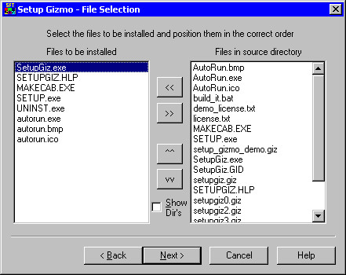

Building the SETUP
STEP 1: Configuring the SETUP information
When you first run the S.F.T. Setup Gizmo, you are presented with a screen that looks like the one below. Each of the boxes needs to be filled in properly before you can continue, with the exception of the license file name, which is optional. You may also open an existing '.giz' file that was saved in a previous session using the 'Open Giz File' button.
The 'Company Name' box should contain the full name of your company, as you expect to see it displayed on the SETUP screen, and as you expect to see it in the registry (though you will be able to manually edit registry entries later). An example might be 'Stewart~Frazier Tools, Inc.'
The 'App Name', similarly, should be the name of your application, such as 'S.F.T. Setup Gizmo'. This will also become the default 'start menu' folder name, as well as being displayed on the top of the SETUP window above the company name.
The 'Start Message' is a little more obscure. Basically, this is the message that you see centered in the middle of the initial dialog box when SETUP begins.
The 'Source Path' is the directory containing your application's files. The entire directory tree will be included in the list of files, so you should make sure that no sub-directories exist off of it that do not contain files belonging to the application. It is worth pointing out that optional files and files that are only installed on a single operating system should be placed in separate sub-directories to distinguish them from the other files. In the case of different files with the same file name that might install on different operating systems, it is necessary to use a sub-directory to make the file name unique.
A typical sub-directory tree might look like this:
C:\Projects\MyProgram\Image
contains EXE's, DLL's, HLP files, LICENSE.TXT, and so on, files that are always installed
C:\Projects\MyProgram\Image\Optional
Contains files associated with optional installation (such as test data or a tutorial)
C:\Project\MyProgram\Image\WinNT
Contains files that are only installed on Windows NT
C:\Project\MyProgram\Image\Win95
Contains files that are only installed on Windows '95
(yes, this is an old application, which was originally written back in 1998)
In this case, you would specify 'C:\Project\MyProgram\Image' as the 'Source Path', and all files in all sub-directories would be visible to you on the subsequent screen.
The 'Image Path' is the destination directory. S.F.T. Setup Gizmo will create a directory tree from this path based on the type of installation, or else place the files there directly. In some cases, working copies of files are placed there, some of which may be deleted after the disk image has been created.
The 'License File' is an ASCII text file or Rich Text Format file containing the license text, which will be automatically wrapped to fit within the license screen when SETUP runs. Typically, it's a file created with NOTEPAD, WordPad, or MS Word. For plain text files it is best not to use any line feeds except between paragraphs, so that the text is automatically fit to the license dialog box. For Rich Text Format files, you should always preview what it will look like using the 'Test' button. As an example, the license agreement that displayed when you installed S.F.T. Setup Gizmo was created in Rich Text Format.
A license file should contain some kind of legal license agreement that the user must press the 'I Agree' button before proceeding with SETUP. Such a file is optional, so leaving this box blank will prevent a license dialog box from being displayed. License agreements can also include derivatives of the GPL (see www.gnu.org).
The 'Cert Files' list is a 'white space' delimited list of one or more certificate files. This entry can be blank if you do not want to install root certificates. For more information, see Adding Certificates to the System Certificate Store.
NOTE: to indicate multiple files, separate the names with white space and optional quotes, such as:
"mycert1.cer" "mycert2.cer"
The 'File Open' dialog box that appears when you click on the 'Cert Files' button will allow you to select multiple files, so you should place all of your 'cer' files in the same directory to make this easy to use.
Advanced Settings

By pressing the 'Advanced Settings' button you can display this dialog box to change the default shortcut, application path, and 'Common Files' directories (as appropriate). Optionally, you can also specify one or more application names that you want to automatically upgrade to the new application, preserving the original application's paths and settings. By default the S.F.T. Setup Gizmo uses the application's name as specified on the starting page to form the default paths. However, you may wish to change them for several reasons, either because the application name contains a reserved character (such as '?' or '*'), or because you do not want the application to be placed into the 'Program Files' directory tree by default.
Each of the paths contains a 'text substition' string, denoted by '%' characters. For a list of these strings and a description of how they may be used, see Specifying Paths.
The 'Upgrade These Applications Also' list box can contain one or more applications to upgrade during SETUP. These applications must have been installed using the S.F.T. Setup Gizmo for this feature to function properly. The SETUP application tests to see if the current application is installed, and then tests to see if any of the specified 'upgrade' applications are already installed, in the same order as they appear in the list box. If one is found, SETUP will use its settings as though it were a previous version of the application you are currently installing, and will change the SETUP registry entries to match this application's name as soon as you begin installing the application. However, if SETUP fails for some reason during the upgrade, the new application name will still be retained.
STEP 2: Selecting the files to install

SETUP will display all of the files in the 'Source Path' directory tree in the right hand box on the next screen (following the initial startup screen), titled 'File Selection'. As you can see in the example below, the relative path names are included along with the file name in both list boxes. This relative path name will be retained in the '.cab' file to ensure that files with the same name but different binaries can be stored in the same '.cab' file without conflict.
Using the 4 buttons in the center, '<<' to move files into the left list box from the right list box, '>>' to remove files from the left list box, '^^' to move files up in their order within the left list box, and 'vv' to move files down in their order within the left listbox, select all of the SETUP files for all options, and order them according to the best layout on the resulting image. In other words, if you put all of the options at the end, it's less likely that the user will have to change diskettes too frequently for a diskette install. By experimenting you can discover the best layout order, but typically it's best to include similar files together to improve compression ratios, especially for a lot of small files.
Both the left-hand and right-hand listboxes are extended selection listboxes, that allow you to select more than one item using mouse-drag or key+mouse. All 4 of the 'arrow' buttons behave as you might expect them to, even with the strangest selection combinations in the left-hand listbox. It is theoretically possible to move a file from bottom to top by selecting everything else, and moving the 'block' in the opposite direction, as one example.
STEP 3: Setting options for each file to be installed
Press 'Next' after selecting the files, and you see the same files (in the same order) in the list box, in approximately the same position, and a rather large number of buttons and boxes on the right side. Fortunately, the "most likely" options are pre-selected for you. All you have to do is confirm them, or change them the way you want to, for each file. Select each file in the list box, one at a time, and adjust its options accordingly.
The various options are basically very simple, once you understand the idea behind them. To begin with, the 'Install Path' can be pre-defined to the 'Windows\System' directory (or System32 on NT), the application path (prompted for during SETUP), the Windows temporary directory (implying "delete after exec" - more on this later), or another directory of your choice, using one of the pre-defined 'string substition' macros (such as '%apppath%\MyDirectory' to install the file in the 'MyDirectory' sub-directory off of the application path assigned during SETUP).
The '?' button at the right of the 'Install Path' text box opens a mini-help dialog box that gives you information about these string substitutions. For a list of these strings and a description of how they may be used, see Specifying Paths.
The 'Shared/System' checkbox, when checked, ensures that the component is registered properly in the 'SharedDLLs' section of the registry, and allows the file to be 'in use' during SETUP, and do deferred file copies (which will then require a reboot when setup completes, to complete the copy operation) as necessary to install the application.
The 'Overwrite Always' checkbox forces the file on the SETUP disk to overwrite any file of the same name in the target directory, regardless of version or date information. This is useful for things you don't expect to have version information, but may have been accidentally tampered with, like text files and documentation.
'Execute After Copy' and 'Register Control' (as well as 'Use .Net Reg') allow you to perform special operations on files once they have been extracted and copied. After all files are extracted and copied, those files marked with 'Register Control' are registered according to the setting of the 'Use .Net Reg' flag. Normally, the file is loaded as a DLL, and then the exported DllRegisterServer() function is executed with no arguments and a BOOL return type (WINAPI call), which is essentially the same behavior as 'regsvr32.exe' (typically this is used for OLE components and custom controls). For files marked with the 'Use .Net Reg' flag this behavior changes slightly, and 'regasm.exe' is invoked instead. You should only set the 'Use .Net Reg' flag for components that require the Microsoft '.Net' Framework.
Following the registration of 'Register Control' files, the files marked 'Execute After Copy' are opened using a 'ShellExecute()', which allows you to specify non-executable files. SETUP will wait until each application closes before continuing on with the next, and a non-zero error return value flags an error. SETUP also passes the optional 'setup' command line parameter ('Args') as the command line to the program, so that you can design your application to accept this parameter to configure itself (typically, an OLE Automation server might simply register itself and quit when '/SETUP' is on the command line). If you specify an optional 'Uninst Arg', 'Execute after Copy' will ALSO run the application during UNINSTALL, passing the specified command line argument to the application.
Candidates for 'Execute After Copy' include OLE/Automation servers, self-extracting SETUP programs for components needed by your application (like MDAC, Speech API, WININET), and 'setup helper' utilities that do 'special configurations' for your apps (or 'special cleanup' during uninstall).
In combination with the 'Execute After Copy' is 'Delete After Exec', which does what it says: it deletes the files marked 'Delete After Exec' after all files marked 'Execute After Copy' have executed. This is useful for cleaning up a self-extracting embedded SETUP application that installes shared components, or for deleting 'setup helper' utilities that aren't needed for UNINSTALL.
NOTE: When a file has been marked "shared/system", and if SETUP determines that a reboot will be required, the 'execute' operation will be delayed until after you re-start the system, by using the 'RunOnce\SETUP' registry key. This also invalidates using 'delete after exec' for 'shared/system' items. In this way, if you have any executable components that are expected to be 'in use', such as 'NT Services' running on an NT/2000/XP operating system, they will be updated during reboot and will re-start using the newer copy. The same applies for registering DLL's. That way, if there are shared components that depend heavily on other shared components already being properly installed, they won't be registered or executed until AFTER you reboot. For files that are NOT marked "shared/system", DLL registration and 'execute after copy' will be performed prior to reboot. As a result, you should consider writing a special utility program to register DLL's and perform the 'Execute after Copy' operations, and then have SETUP add an appropriate registry entry to 'RunOnce\SETUP' for it so that it runs after the system reboots (and thereby also forcing a reboot after setup) if you believe that there might be a problem if you were to attempt to register your DLL's or run your 'execute after copy' applications on a system that may have shared components 'in use'.
'Add Shortcut' causes a shortcut to this item to be produced in the 'Start Menu\Programs' folder when SETUP completes. During SETUP, the user will be prompted for the folder name (initially it is the same as the application name specified on the first page), and can optionally add the shortcuts specified by the S.F.T. Setup Gizmo wizard.
Whenever UNINSTALL is included, it is automatically given a shortcut, and installed in the 'uninst' sub-directory (see 'uninst' under 'Specifying Paths'), located off of the application directory as 'UNINST\{Application Name}', along with a copy of SETUP.INF (which UNINSTALL will need to uninstall the application).
'Option Install' and 'Specific OS Only' allow you to create SETUP options so that certain files are only installed for certain operating systems, or when the user elects to install optional components. For more on this, see Optional Components.
Finally, the 'Do Not Uninstall' button does just that - it prevents UNINSTAL.EXE from removing it from your system. Typically, if you have an updated component that is part of the operating system as part of your application (a driver file or DLL, typically), you might not want it uninstalled if the user elects to uninstall your application. It would have to be something VERY reliable, obviously, as the user would NOT be able to undo its installation. However, undoing it may be WORSE than leaving it, and it is THESE cases where you might want to disable uninstall for that particular file.
Modifying the Default Shortcut Settings
Whenever one or more items has the 'Add Shortcut' flag set, the S.F.T. Setup Gizmo Wizard will display the 'Shortcut Advanced Properties' page, shown right (following the Optional Components page described in the next section). Each application that has a shortcut assigned to it will be specified in the 'Application File Name' List on the left-hand side of the page. To assign each item's properties, select the desired application in the 'Application File Name' list. The selected item's properties will be assigned to the remaining items on the page.
The 'Shortcut File Name' indicates the file name given to the shortcut, typically with the default '.lnk' extension. The default file name is derived from the file name for the entry in the 'Application File Name' list, as well as the default 'Shortcut Description' in the box below it. When the user displays the start menu folder, the file name (minus extension) will be displayed next to the application's shortcut icon, and the description text will appear in the 'tool help' window if you hover the mouse over the icon (in most Windows OS's). You should therefore assign the 'Shortcut File Name' to a relatively short value such as "Main Application", and the 'Shortcut Description' to a more descriptive value, such as "Run the Main Application with default options".
The 'Command Line Parameters' section may be useful for applications that you want to give a different behavior to when run from the Start Menu shortcut. The default value is blank (no arguments). Any text entered here will be passed to the application's command line 'as-is' from the shortcut. Beneath the 'Command Line Parameters' are 4 radio buttons labeled 'Normal', 'Min', 'Max', and 'Hide'. Selecting 'Normal' passes 'SW_SHOWNORMAL' as the 'CmdShow' parameter when starting the application. Selecting 'Min' passes 'SW_SHOWMINIMIZED', 'Max' passes 'SW_SHOWMAXIMIZED', and 'Hide' passes 'SW_HIDE'. The default value is 'Normal'.
The 'Icon Image' section consists of a 'drop down list' (a list of 'icon' file names) and a horizontal list of images. By default, the 1st image for the entry from the 'Application File Name' section will be used (if any). If the file contains no images, or if you select {NONE} from the drop-down list box, a default icon will be chosen by the operating system. This is the typical setting for non-executable files (such as documents or help files). For other executable files, you might want to select a different source for icons, including '.ICO' files, '.DLL' files, and other '.EXE' files that are included in your SETUP configuration. In addition to these files, the drop-down listbox contains 2 entries: '$moricons.dll' and '$shell32.dll'. The '$' indicates that it's a system file, the location of which depends upon the OS that is currently installed. Since Windows is intelligent enough to find this for you, there's no need to specify a path. The other files (without the '$') are assumed to be located in the directories specified by SETUP. The 2 system files 'moricons.dll' and 'shell32.dll' contain nearly all of the other icons that Windows typically supplies for 3rd party (and internal) applications, and are present on all versions of Windows supported by the S.F.T. Setup Gizmo.
STEP 4: Registry Entries
 And, NOW comes the worst part: getting those registry entries right! No need to worry, it's mostly automatic from here. Just press the 'Add Standard Entries' button, and/or the 'Import Reg' button (if your development environment created a '.reg' file for you), and the registry entries are automatically set up. All you need to do is verify that the keys, values, and strings are correct.
And, NOW comes the worst part: getting those registry entries right! No need to worry, it's mostly automatic from here. Just press the 'Add Standard Entries' button, and/or the 'Import Reg' button (if your development environment created a '.reg' file for you), and the registry entries are automatically set up. All you need to do is verify that the keys, values, and strings are correct.
As before, the default values are based on the things you entered on the first page, the application name and your company name.
When you press 'Add Standard Entries' each EXE file is given an 'App Path' entry. You may choose to delete or modify these as you see fit. Selecting the string in the top listbox shows its contents in the 3 boxes below. Use the variable substitution (press the '?' buttons for mini-help dialog boxes on this) to ensure that the registry strings point to the right files, no matter where the user installs them. For a list of these strings and a description of how they may be used, see Specifying Paths.
Use 'Add New' to add a new entry (you enter the values in the empty boxes and select a different entry or 'Add New' to update the list box), use 'Remove' to remove the currently selected entry, or 'Revert' to undo changes to the current entry (before selecting another one, that is).
NOTE: A blank value string causes the registry entry or string value to be removed, so you need to put something here if you want the key to exist.
STEP 5: FINISH!
One important note: You can NOW save the settings you just entered into a '.GIZ' file, which is automatically associated with this application when you installed it. Press the 'Save Configuration' button to save the settings in a '.GIZ' file. To open a '.GIZ' file, specify the file name on the command line for SETUPGiz.Exe to open it with the previously saved settings. Or, you can double-click a '.GIZ' file from an explorer window to do the same.
(The main reason you have to get to this point before saving is to make sure that the GIZ file is consistent with itself)
NOW we may create a SETUP image! The four basic setups are:
- 'DVD ROM' - single directory 'SETUP' off of the root directory
- 'DVD ROM as CD Images' - multiple directories, DISK1, DISK2, etc. off of the root in a DVD image
- 'CD ROM Image' - similar to DVD ROM in its general layout, but allows for multiple CD-sized disk images
- 'Self-Extracting SETUP Utility' - generates a self-extracting executable file 'SETUP.EXE' in the destination path.
CD images on DVD ROM can be copied to individual CDs by end users, which may be useful for backup purposes. Additionally, for CD and DVD, you can configure it to 'auto-start' when the CD or DVD is inserted by checking 'Auto-Run CD/DVD'
Whenever you select 'CDROM as Diskette Image' or 'Diskette Image Only', the 'Reserve Space on Disk #1' box is enabled so that you might specify the number of KB to reserve on the first diskette image for additional files (such as license files or serial number files) that might be generated later. The default value is zero, and the maximum value is 1024 (although for all practical purposes you should keep this to a relatively small size, less than 128 kb).
Additionally, you could use this 'extra space' for any files that you do not want to be compressed, but want to be on the first diskette image. As an example, suppose you had a setup 'wrapper' application that you wanted users to run instead of SETUP.EXE . You could re-name 'SETUP.EXE' as something else (let's say, 'SETUP.IMG'), then name your own application 'SETUP.EXE' or 'INSTALL.EXE', and have it run the S.F.T. Setup Gizmo 'SETUP.EXE' as 'SETUP.IMG' on the diskette in 'quiet mode' (or similar), passing path (and other) information as command line parameters, thus providing identical capabilities to the S.F.T. Setup Gizmo 'SETUP.EXE' while using your own SETUP application as a 'wrapper'.
Normally, S.F.T. Setup Gizmo uses 'MSZIP' compression, which compresses faster but is larger and takes a bit longer to decompress. However, to maximize compression efficiency, you can check 'Use LZ Compression' to use LZX compression, which takes longer, but generally gives you smaller cabinet files (and potentially fewer diskettes or smaller self-extracting download files).
On occasions, you might want to make a SETUP application that does not include UNINSTALL capability. This might be a custom ActiveX control, or a subsystem consisting entirely of shared components; or, you may have your own uninstall program that you wish to use in lieu of the one automatically included for you by the S.F.T. Setup Gizmo. In these cases, selecting 'No Uninstall' will prevent any uninstall information from being added to the INF file, and UNINST.EXE will not be included on the SETUP disk nor installed on the user's computer system.
Additionally, you can choose the 'Quiet SETUP' option to prevent any dialog boxes from being displayed that prompt for paths or provide general information about SETUP. The 'License' dialog box will still display, as will those associated with optional components. This option also prevents the background window from displaying if another copy of SETUP is currently running. 'Quiet Setup' is ideal for self-extracting "packaged" sub-systems or components that you can easily add to a project, things like shared components, custom controls, ODBC drivers, and so forth. One IMPORTANT side-effect of this is the default selection of the 'windows' directory as the application directory [unless there is already a previous installation, in which case the existing installation's path is used], as the user will not be prompted for a directory to install the application. As such, you should ensure that ALL installed components have an appropriate path name pre-assigned. If you do not select 'No Uninstall', the uninstall program 'UNINST.EXE' and a copy of 'SETUP.INF' is placed in a directory that matches the application name, directly off of the WINDOWS directory. In this mode, the initial "welcome" dialog box does not display, nor is the user prompted for the application directory. Again, the user WILL be prompted for options (if there are any), and a 'start menu' folder will automatically be added, using the default values, without the user being prompted, if there are any files that have been marked 'Add Shortcut', or if 'No Uninstall' was not specified.
NOTE: Invoking 'Quiet setup', either from the SETUP command line, or by using the S.F.T. Setup Gizmo 'wizard', is disabled for unlicensed versions of S.F.T. Setup Gizmo. Only a properly licensed version can invoke 'Quiet' mode.
The 'Prompt for REBOOT' section indicates whether you want SETUP to prompt for reboot in the event that any pending "rename after reboot" file operations have been scheduled by the operating system. Shared components that are 'in use', and the installations of subsystems (like ODBC) are typical causes for pending "rename after reboot" file operations. Also, if you run the SFT 'UNINSTALL' utility prior to running SETUP, there may be a pending "rename after reboot" operation that performs some necessary cleanup. If you choose 'AUTO', SETUP will look for any pending "rename after reboot" file operations, and ask you if you want to reboot if it finds any. If you choose 'ALWAYS', setup will always prompt you to reboot, regardless. And choosing 'NEVER' prevents SETUP from prompting you for reboot, whether or not there are any pending "rename after reboot" file operations scheduled by the operating system. It is important to point out that the SETUP command line options '/NOREBOOT' and '/FORCEREBOOT' will override the 'reboot' setting specified in the INF file during SETUP.
Finally, you can use the 'Do not exit on completion' checkbox to prevent 'Finish' from exiting the application once the image has been built. Pressing 'Finish' does just that - it finishes by creating the SETUP image, then (normally) exits the program. However, in the case of an error, S.F.T. Setup Gizmo will always remain running.
A note about self-extracting files
Self-extracting files use the same 'SETUP.EXE' as other installations, except that the files have been appended onto it using a simple structure that indicates the size of each element following the executable file binary. SETUP knows how to find the last byte in the executable image, and it looks at the next bytes to see if there is a self-extracting image or "normal" install. Self-extracting images then create temporary files (SETUP.INF, LICENSE.TXT, and the cabinet file) which are subsequently deleted after SETUP terminates. It is worth pointing out that if you were to include self-extracting SETUP files within self-extracting SETUP files (ad infinitum, as deep as you like), these files would be deleted and overwritten by subsequent self-extracting SETUP programs, since they all write to the same (temporary) directory. However, because of the way SETUP works, this would never become a problem. In some ways, it's a 'feature'…
{footer here}